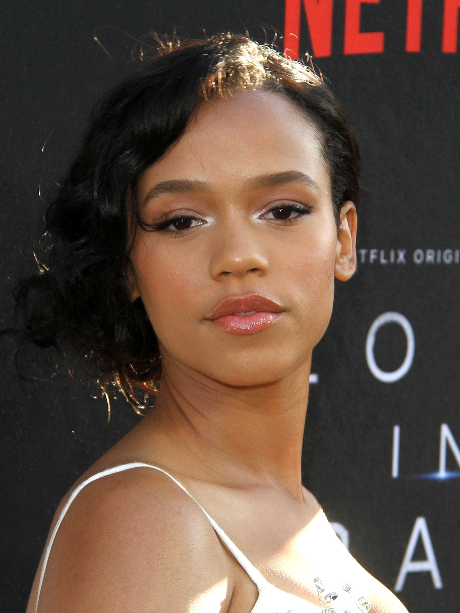
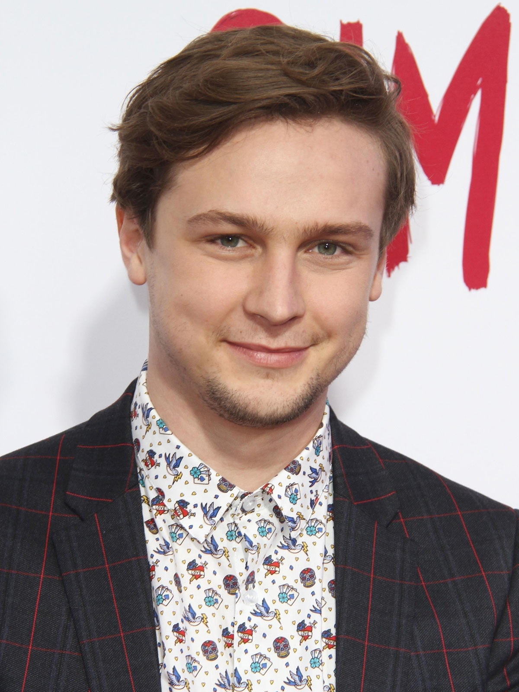
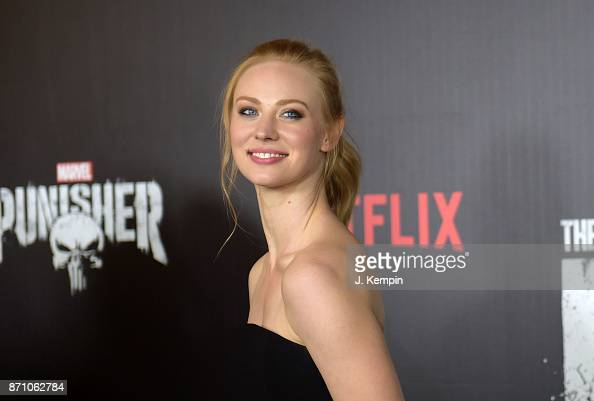
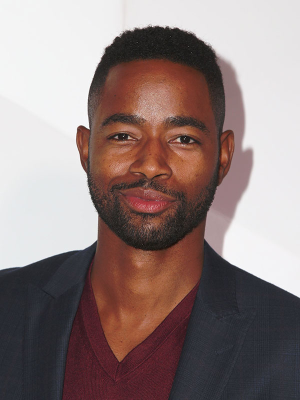
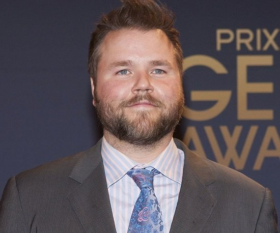
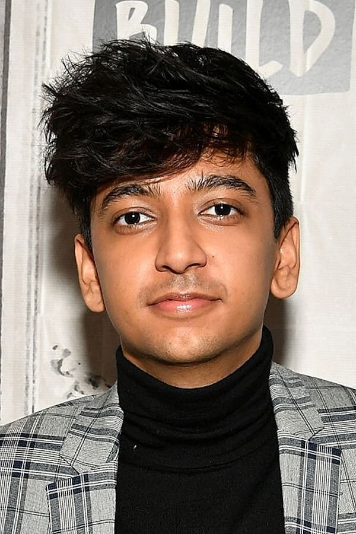
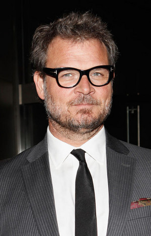

Adam Robitel é um diretor de cinema, produtor, roteirista e ator americano. Ele é mais conhecido por dirigir filmes de terror, como The Taking of Deborah Logan, Insidious: The Last Key, Escape Room e sua sequência Escape Room: Tournament of Champions. Ele também co-escreveu Paranormal Activity: The Ghost Dimension.

Taylor Russell é uma atriz canadense. Ela é conhecida por seus papéis recorrentes nas séries de televisão Strange Empire e Falling Skies. Em 2018, ela estrelou como Judy Robinson em Perdidos no Espaço, da Netflix o reboot de série de televisão original de 1965.

Logan Miller é um ator, guitarrista e cantor de rock estadunidense. Nasceu em Englewood, no Colorado, USA. Atualmente mora em Los Angeles. É mais conhecido por interpretar Tripp Campbell na série I'm in the Band.

Deborah Ann Woll é uma atriz norte-americana, mais conhecida por interpretar Karen Page na série de televisão Demolidor.

Wendell Ramone "Jay" Ellis Jr. é um ator americano. Nascido em Sumter, Carolina do Norte, ele começou como modelo, antes de se mudar para Los Angeles e iniciar sua carreira de ator. Em 2013, ele recebeu seu primeiro papel importante na série The Game da BET.

Tyler Sean Labine é um ator canadense. Mais conhecido por seus papéis principais em Mad Love, Sons of Tucson, Reaper, Invasão e Dead Last. Atualmente protagoniza a série Deadbeat. Ele também protagonizou os filmes Cottage Country, Tucker & Dale vs Evil e Flyboys.

Nik Dodani é um ator, escritor e comediante americano. Dodani é conhecido por seus papéis como Zahid em Atypical, uma série de comédia original da Netflix, e Pat Patel no renascimento do popular sitcom da CBS Murphy Brown.

Yorick van Wageningen é um ator holandês que se apresentou em filmes holandeses e americanos, incluindo The Chronicles of Riddick e o remake de 2011 de The Girl with the Dragon Tattoo.
